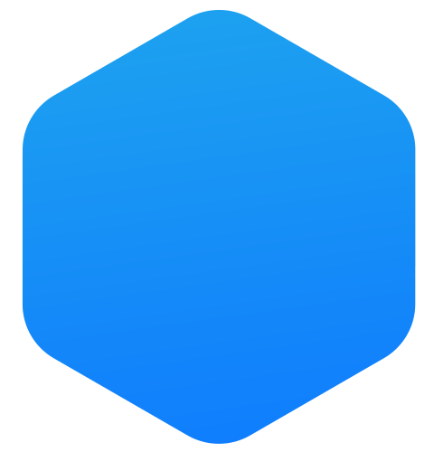
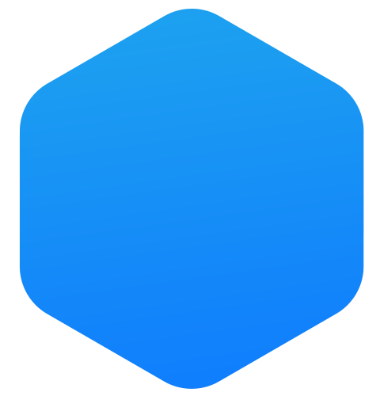
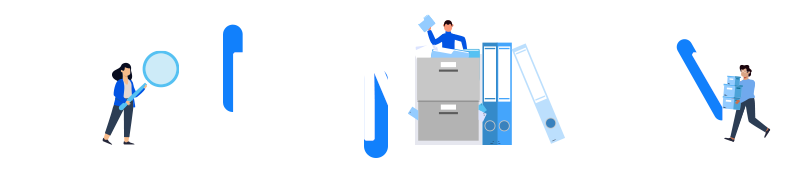

Vision
Distributed Incentive Specialized Knowledge Trading System
POLARIS SHARE returns the value of knowledge,
which documents, and networks have, to knowledge producers and other users.
Knowledge producers earn rewards by sharing or selling documents on the POLARIS SHARE with free of charge or low trading fees.
Contents are curated by voters who have tokens, not by centralized companies.
The users have benefits from more diverse and quality contents shared by knowledge producers.

Strategy
Quickly attracting users and documents
Organizing accessible contents
Attracting Users We have a plan to make 100 million users of the Polaris Office who
have about
1
billion documents as priming water for boosting up at the initial stage. In order to attract
these
active users and their documents to the knowledge ecosystem, we will pay 4% of the total token
amount(to be issued) for them as compensation.
Organizing accessible contents
Inviting documents In the early stages of the system, users earn rewards from token inflation, which it halves every year. As the system grows by attracting more users and contents, the unit price of tokens will rise further, and users will also be rewarded from related advertisements. (the Slideshare is currently ranked by Alexa as the world's 159th largest site with traffic volume)
Organizing contents To identify better documents is the key element for success in a situation where more and more documents are shared. The curator uses tokens to vote for documents for four weeks and considers documents with more votes as better documents. During the four-week voting period, curators earn greater rewards if the documents they voted for are popular with more traffic and sales. It gives curators the motivation to find better documents.